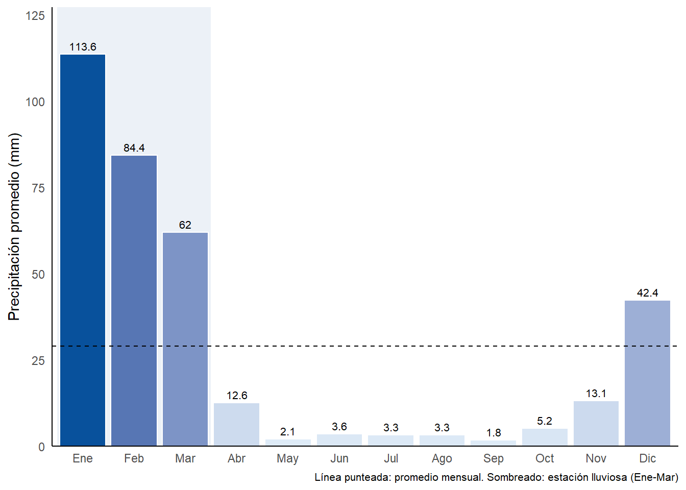
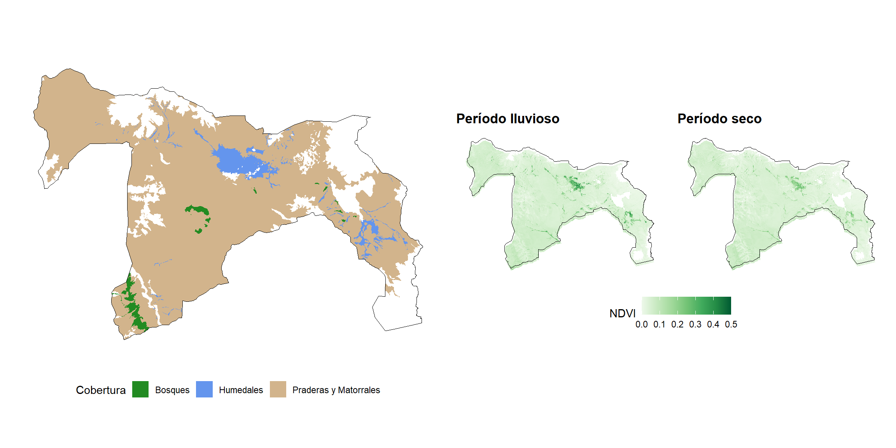
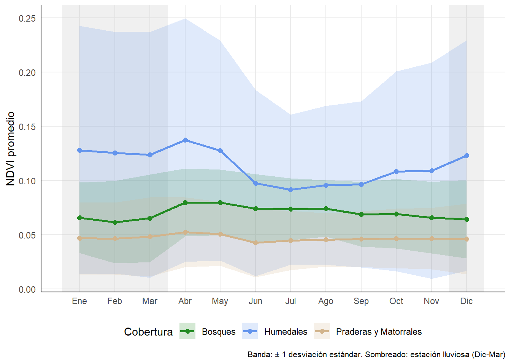
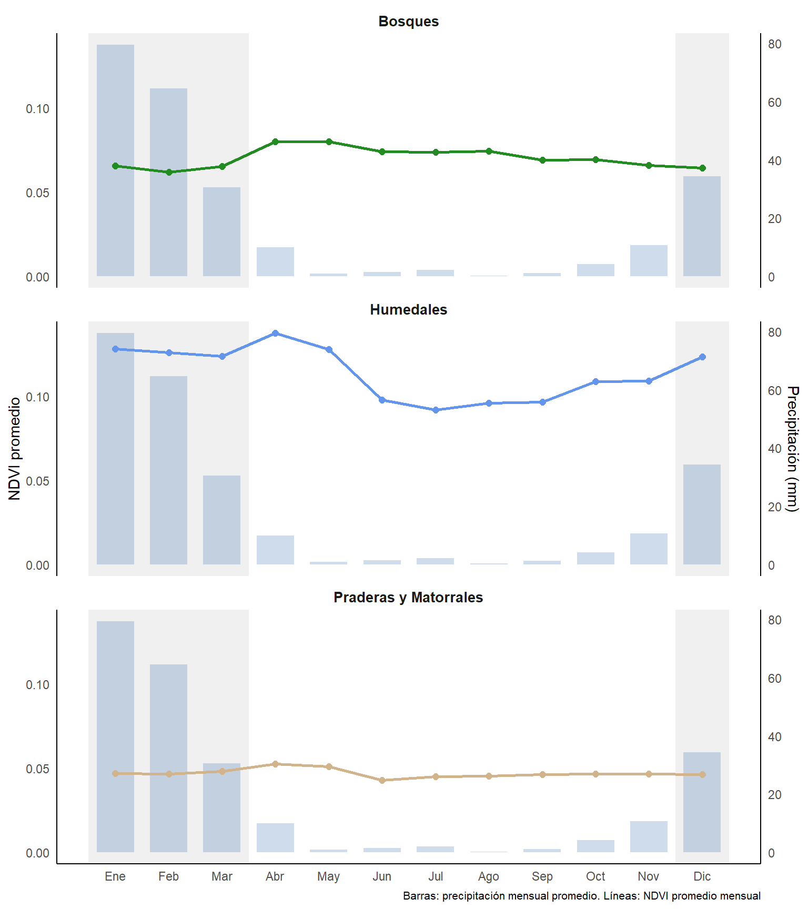

Resultados
Variable climática
Precipitación
La precipitación en el Parque Nacional Lauca presenta un marcado patrón estacional, concentrándose en los meses de verano (diciembre-marzo) debido al “invierno altiplanico”.
Serie temporal
Estacionalidad

Series temporales de NDVI
El Índice de Vegetación de Diferencia Normalizada (NDVI) permite cuantificar la productividad vegetal a partir de imágenes satelitales. Valores más altos indican mayor actividad fotosintética y biomasa verde.
Distribución espacial
El parque presenta tres tipos principales de cobertura vegetal: bosques de queñoa (Polylepis tarapacana), humedales alto-andinos (bofedales) y praderas con matorrales. Cada tipo responde de manera diferente a las condiciones climáticas estacionales.

Serie temporal por cobertura
La serie temporal de NDVI (2014-2024) revela patrones distintivos para cada tipo de cobertura. Los humedales presentan los valores más altos pero con mayor variabilidad interanual, posiblemente asociada a fluctuaciones en la disponibilidad hídrica.
Ciclo estacional
El ciclo estacional muestra que todas las coberturas alcanzan su máximo de productividad entre enero y abril, coincidiendo con el final de la temporada de lluvias. Los humedales presentan los valores más altos de NDVI pero también la mayor variabilidad interanual, mientras que las praderas y matorrales mantienen valores bajos y estables generalmente durante todo el año.

Relación NDVI-Clima
El análisis integrado de precipitación y NDVI evidencia el acoplamiento entre disponibilidad hídrica y productividad vegetal en el altiplano. La vegetación responde a las lluvias estivales con un desfase de aproximadamente un mes entre el peak de precipitación (enero-febrero) y el máximo de NDVI (marzo-abril). Los humedales muestran los valores más altos pero también mayor sensibilidad a la variabilidad climática, mientras que las praderas y matorrales mantienen valores bajos y estables independiente de las fluctuaciones en las precipitaciones.
